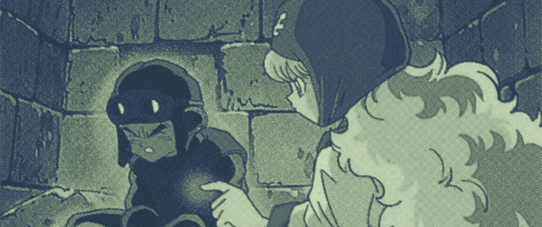
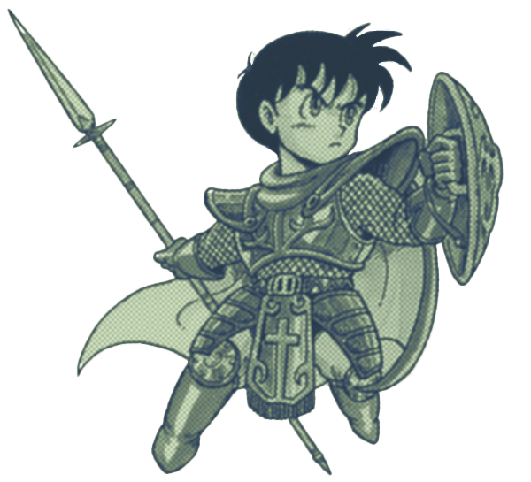
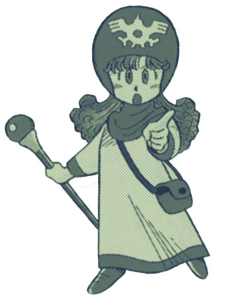

Peepaw 2

Written 11/01/26
Even though it falls into similar pitfalls in its ending sections, Dragon Quest II is a massive improvement over its predecessor.
Gameplay
Dragon Quest II's strongest asset is its early game. Comparisons against Dragon Quest will stand out and be incredibly flattering towards DQII.
DQ's most definitive issues were its uninteresting battles and harsh EXP curve, DQII solves both of these issues with its expanded party sizes for both the player and the enemies.

Combat becomes naturally more complex when the player is given multiple targets and multiple turns. In DQ it was often unwise to do anything other than attack. Putting an enemy to sleep gives the player a massive advantage, but it is very likely for sleep to miss on stronger enemies, leading to the player wasting a turn and taking damage that could kill them. Also, with only a single turn, it was common to get trapped in healing loops: if the player tries to heal against a difficult enemy, they may heal themselves and then lose the exact health they healed within the same battle turn.
DQ battles were not won by clever tactics: they were won by being stronger. If an enemy is difficult, they should be avoided until the player has leveled up. This perspective pushes the player into a loop where all they need to do is press the attack button until the battle is over.
With multiple party members, non-damaging moves are less likely to lead to a net-neutral or net-negative outcome, which encourages more complex battle strategies. A cohort of enemies is likely to feature a mixture of easy and difficult enemies, the player can strategically use their party to take out the enemies in the most advantageous order. DQII's combat reaches a level of complexity where the player will often have to question how they want to engage with a group of enemies. They will start keeping an order in their head of which enemies need to be defeated first, and what spells will "solve" each enemy. These concepts have become fundementals of turn-based combat, but DQII was stepping into new territory at its time.
In the early to mid game the EXP curve is engaging. Enemies offer more EXP on a base level, and the number of enemies increases the amount of EXP per battle. Quicker level ups lead to quicker spell unlocks; the player will be given new tools for battles at a decent pace, which keeps gameplay from growing stale. Even if the EXP curve was the exact same as DQ's, the EXP levels being comparatively higher makes DQII a more encouraging experience. At best the player could get just over 100 EXP in DQ; in the late game of DQII, it is common to get over 1000 EXP in a single battle.
World
DQII is more guided and crafted experience. The player is treated to a cinematic, for 1989, opening cutscene, followed by charming sub-quests to gather their party members. DQ was an important step and holds some Dragon Quest iconography, but DQII solidifies what Dragon Quest is like.
Despite a sparse story, DQII's world is lively: townsfolk have funny dialogue, there are usually minor events happening in towns, there will be numerous NPC's throughout maps outside of towns, the player is tricked by an evil guy in a dungeon multiple times. At one point the player is told to give an NPC some time to make an item, this is fully literal. The player is expected to turn their game off and reload so time can pass. DQ was extremely static in its presentation, which makes all of these little moments more impressive than they likely are.
It is interesting to view how excited DQII is about itself. The player is given a ship a little under half way through the game; this ship might be DQII's greatest asset. It is incredibly freeing for the player, and it puts into perspective how massive DQII's world is.
In the center left corner of DQII's map sits DQ's map. The distance between DQ and DQII within the story has become evident as the land becomes a fragment of itself
On its Own
As the player develops further into DQII, comparisons between it and DQ are less present and DQII is forced to stand on its own. For the beginning to mid game DQII can do this; it can be tedious, but it is clearly growing into a developing genre. By the late game DQII has fallen into the same aggravations as its predecessor.
The player needs to grind for EXP to finish the final fights, but combat is still not entirely engaging. Tedious dungeon layouts combined with high encounter rates will push players to run from battles, which will place them at an EXP deficit.
Rhone, the second to last dungeon in the game, is egregious. Enemies in Rhone can drain MP, 2/3 of the players party requires MP to function, and there is only a single, difficult to get, consumable that restores MP. Fighting the enemies in Rhone places the player at a complete disadvantage: the dungeon is huge, it is in the players best interest to run through it as fast as possible.

The area behind Rhone is not without frustrations either. One of the enemies has a spell that can instantly kill a party member
Similar to DQ, the final bosses are designed to be impossible to defeat unless the player is past a specific level, even though it is fully possible for the player to reach these bosses at a much lower level. Both of the bosses have access to healall: for the player to win they need to have a damage output that can outpace the bosses' access to healall. This style of final boss requires low strategy, and locks players into beating the game in a specific way, which is antithetical to how a final boss should function.
Dragon Quest II runs on its charm and improvements, it is deeply unfortunate to see it end in the same position as Dragon Quest: forcing the player into a hollow corner where the game is reduced to the same screens. Nothing is more demoralizing than a game that makes it clear how much of the player's time is being wasted to reach longer runtime.
Credits
Notes
I did, once again, use a cheat code on the final boss since I was honestly feeling terrible about how much time I was wasting when I could have been doing anything else. The ending sections of DQ and DQII made me feel terrible in a way that very few games have.
While researching I was shocked to see many people label DQII as worse than DQ. DQII has a long list of issues, but as stated, I do think its a great improvement over DQ and most issues it has are holdovers from DQ.